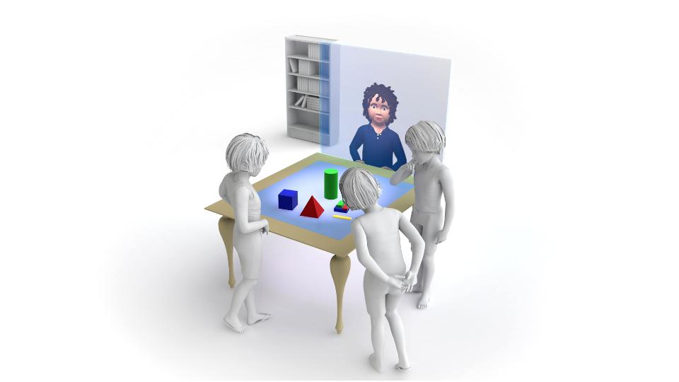

Virtual Agents || tangible interaction between humans and virtual peers

Team: Ben Boesel, Ian Go, Ryan Donegan, Su Baykal
Role: Designer and User Researcher
Client: ArticuLab at Carnegie Mellon University.
Role: Designer and User Researcher
Client: ArticuLab at Carnegie Mellon University.
Background: The SCIPR and ALEX projects investigate how children interact with and learn from virtual agents. Our client is exploring new ways to encourage engagement and curiosity through virtual agents. Our task aims to promote curiosity, establish agency for virtual agents, and promote collaboration via 3D activities.
The ArticuLab hopes to use Alex to teach children lessons that an adult teacher cannot. How can Alex collaborate with children in hands on learning experiences?
"How can a virtual agent be embodied in the physical space?"
Research
We conducted research to gain a better understanding of how virtual agents interact with humans, identify differences between robots and ECA's, and explore mixed reality scenarios and technologies. We performed literature reviews, video analyses, expert interviews, and a competitive analysis. Main findings from our initial research include: humanoid form isn’t necessary for increased embodiment, the agent’s sensing capabilities are as important as physical embodiment, and we must consider the implementation of a 2D vs. 3D approach. Our final research report can be found here.
Lo-Fi Prototype
In our first prototype we created a digital and physical game to gain a better sense of Alex's, the virtual agent's, capabilities and begin our explorations with different means of actuating objects. Our lo-fi report can be found here.Main Findings
• Alex seemed like an advisor or teacher because he had a lot of information and knew the solutions.
• Tangible Games provide more hands on learning experiences
• Digital Game provided more information and direct involvement that Alex could have with the game
• Alex’s capabilities need to relate to capabilities that kids have in the game
Mid-Fi Prototype
With our second prototype we decided to create a more fun tangible collaborative activity: Marble Run. We hoped to standardize the activity, focusing more on interactions between players and the virtual agent during testing. We looked into different ways of embodying Alex in the physical world. Our mid-fi report can be found here.Main Findings
• Players focused on the table and game more than where Alex was represented.• Actuation (WoZing) needed to be more realistic and functional
• Alex's involvement and ability to collaborate was limited due to speed and design of the game
• The activity didn’t expressly require Alex’s help to complete, so many players ignored Alex
Hi-Fi Prototype
In our final prototype, we experimented with different forms of actuation and visualization. To improve the virtual agent's ability to participate, we adapted the game to provide specific roles for each player. Other goals for this prototype include creating a more compelling and engaging activity as well as creating an improved and replicable Wizard-of-Oz study. Our final report can be found here.Main Findings
• Players felt like Alex was just like another human player• Players liked that Alex had a personality, and thus were able to connect to him/her
• Building early rapport among players and with Alex is important
• Kids always assume Alex, the “robot”, is right
• Participants saw Alex as a helpful, supportive player
Next Steps
The ArticuLab at Carnegie Mellon University will use findings and prototypes from this study to continue development and run further research studies. As a team we recommend the next prototype to include a functional virtual agent, mixed actuation and visualization techniques, and improved visualization approaches. As for further game design, we recommend adaptations that would include the virtual agent more prominently or with distinct roles. Any future games should be challenging, open-ended, engaging and well paced.